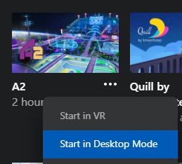
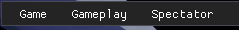
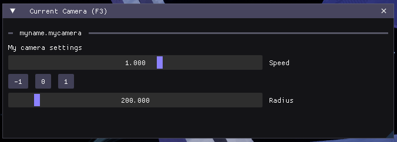

Getting Started
Installation
You must run the game at least once to generate the necessary files.
To run the spectator client, you must have the desktop build of A2 installed in the Oculus app. Select the 3 dots next to the app in your library, and click "Start in Desktop Mode":

The GUI for spectator client is hidden by default, but can be toggled with F1. Once activated, a menu bar will appear at the top with options to open various panels:

Using the Default Cameras
Upon entering spectator, the default freecam (anotheraxiom.freecam) is activated. You can switch to other cameras using the Cameras panel (under Spectator > Cameras or press F2), or by pressing their associated keybind. You can also use this panel to adjust the keybind for any camera.
Editor Setup
While any text editor can be used to edit camera scripts, we recommend using VSCode with the following extensions:
Creating Your First Camera
All cameras in A2 are powered by Luau scripts. In this section you will create a new script and add it to the game.
Creating a Camera Script
To start, open the user camera folder in your documents directory (C:\Users\[USERNAME]\Documents\Another-Axiom\A2\Cameras\Behaviors) in your editor. If the folder does not exist, make sure you run A2 at least once.
Note
Following this naming convention is not necessary, but it helps to prevent name collisions with other camera scripts
Create a new file named myname.mycamera.luau and add the following contents:
Next, in A2, open up the Camera Logs panel under Spectator > Camera Logs or press the F4 key to open it. You should see your message printed there:
Experiment
Try changing the text to something different! The script will automatically reload when you save.
Activating Your Camera
To activate your camera, bring up the Cameras panel again (F2), and select Activate next to myname.mycamera.luau. If you would like, you can add a keybind here to quickly switch to your camera.
Adding Some Functionality
As you can see, this camera doesn't do anything: the camera is stuck at the origin. Lets add some code to our script to make the camera move in a circle:
Experiment
Try changing this function to get different behaviors. What other shapes can you create?
local t = 0
function tick(dt: number)
t += dt
local target = Vec3.new(0, 8000, -25000) -- a nice spot in the station
local offset = Vec3.new(math.sin(t), math.cos(t), 0) * 200
camera.position = target + offset
camera:lookAt(target, Vec3.upVector)
end
After saving the file (and activating our camera if it is not already active), you should see the camera moving in a circle around the arena.
Adding a GUI
As you can see, our script has several parameters that influence the path that it takes. Wouldn't it be nice if there was a way for the end user to adjust these without having to modify the source code?
A2 exposes much of the functionality of ImGui to camera scripts. These methods are available under the Gui namespace, but can only be used inside of the onGui function.
First, lets pull some of our parameters outside of tick:
local speed = 1
local radius = 200
local t = 0
function tick(dt: number)
t += dt * speed
local target = Vec3.new(0, 8000, -25000) -- a nice spot in the station
local offset = Vec3.new(math.sin(t), math.cos(t), 0) * radius
camera.position = target + offset
camera:lookAt(target, Vec3.upVector)
end
Now we can add a gui method to our script:
Experiment
Try adding an element to adjust the target. Is there a GUI element that works with Vec3's?
-- ...
function onGui()
Gui.text("My camera settings")
speed = Gui.sliderFloat("Speed", speed, -5, 5)
if Gui.button("-1") then
speed = -1
end
Gui.sameLine()
if Gui.button("0") then
speed = 0
end
Gui.sameLine()
if Gui.button("1") then
speed = 1
end
radius = Gui.sliderFloat("Radius", radius, 0, 2000)
end
-- ...
To bring up this menu, bring up the Current Camera panel (Spectator > Current Camera or F3). This displays the GUI for whatever camera is currently active:

The Camera Config
Now that the user can tweak the parameters of the camera, they might want to save these values for the next time they launch A2. Luckily, we can use the builtin config object to persist state.
When the script loads, the saved configuration is loaded into the config object.
To get us started, we can use the config object to store our speed and radius settings:
Experiment
If you've updated your script to adjust the target position, store the position in the same way.
config.speed = config.speed or 1 -- use a default value if config.speed is not set
config.radius = config.radius or 200
local t = 0
function onGui()
Gui.text("My camera settings")
config.speed = Gui.sliderFloat("Speed", config.speed, -5, 5)
if Gui.button("-1") then
config.speed = -1
end
Gui.sameLine()
if Gui.button("0") then
config.speed = 0
end
Gui.sameLine()
if Gui.button("1") then
config.speed = 1
end
config.radius = Gui.sliderFloat("Radius", config.radius, 0, 2000)
end
function tick(dt: number)
t += dt * config.speed
local target = Vec3.new(0, 8000, -25000) -- a nice spot in the station
local offset = Vec3.new(math.sin(t), math.cos(t), 0) * config.radius
camera.position = target + offset
camera:lookAt(target, Vec3.upVector)
end
By itself, this doesn't provide us with any persistence. In order to persist the state of config, we need to call saveConfig().
Additionally, we can save a copy the config (using table.clone()) to allow the user to reset their config to its initial state:
Experiment
In addition to Save and Undo, there are hundreds of other icons available. Try using them in some other GUI labels!
config.speed = config.speed or 1 -- use a default value if config.speed is not set
config.radius = config.radius or 200
originalConfig = table.clone(config)
local t = 0
function onGui()
-- ...
if Gui.button(Icon.Save .. " Save Config") then
saveConfig()
originalConfig = table.clone(config)
end
if Gui.button(Icon.Undo .. " Reset Config") then
config = table.clone(originalConfig)
end
end
-- ...
How is this config saved to disk?
All of the configuration for a camera (what script to use, keybind, and configuration) is stored in a json file. The config data is stored under the customdata key.
These camera files are located in the Configs folder next to the Behaviors folder, and are used to determine what cameras to spawn, and what scripts to use.
However, when a script does not have any existing cameras associated with it, a default camera json (e.g. myname.mycamera.json) is generated.
Multiple cameras can reference the same script while having different keybinds and configurations.
Try making a copy of myname.mycamera.json and edit its custom data to change the config speed. Another camera will appear in the Cameras panel with the new speed.
What's next?
- Examine the official cameras. Their files are located in the games install location (By default,
C:\Program Files\Oculus\Software\Software\another-axiom-a2-cqxlff\A2\Content\Scripts\Cameras\Behaviors\) - For a reference of all functions and types available, see the
*.d.luatype files located under the built in behaviors path. The*.jsonfiles are there to provide documentation during autocomplete, and are derived from the types files. - Check out the replay functionality
- Check out the recommended Luau style guide